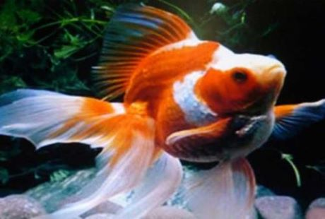
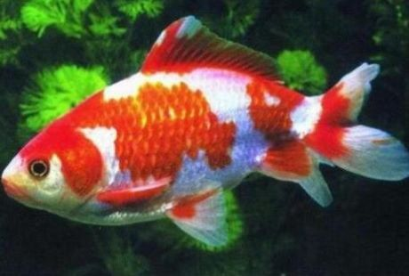
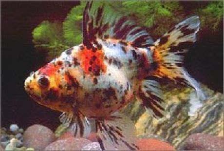
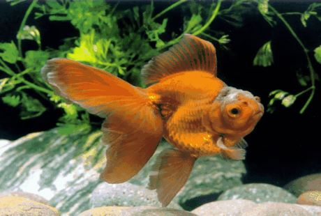
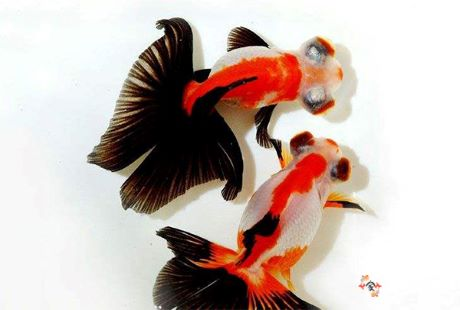
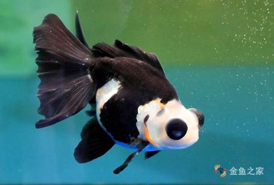

鱼的种类有很多，一般将鱼分为海水鱼和淡水鱼，海水鱼是生活在海里面的鱼类，而淡水鱼是生活在江河湖泊里面的。
世界上鱼的种类共约2万余种。其中圆口纲约73种，软骨鱼纲约800种，硬骨鱼纲约2万种左右。鱼的种类3000种左右。其中海水鱼类约2100余种，淡水鱼类1010种左右。
海水鱼主要是指产自热带地区的海鱼，它们色彩特别艳丽，形状奇特，是观赏鱼产业未来的发展方向。
世界上已知鱼类约有26000多种，淡水鱼约有8600余种。现有鱼类近3千种，其中淡水鱼有1000余种。
世界上已知鱼类约有26000多种，是脊椎动物中种类最多的一大类，约占脊椎动物总数的48.1%。它们绝大多数生活在海洋里，淡水鱼约有8600余种。现有鱼类近3千种，其中淡水鱼有1000余种。
本站主要讲解一下金鱼的种类资料。
金鱼的品种主要分为草种，文种，龙种，蛋种这四大类，它们的生物形态以及生活习性都是不同的。
草种金鱼是相对较为原始的一种金鱼，其形状也与鲫鱼极为相似，其头尖而狭长，体呈纺锤形。体色为红色，也有的呈银白花纹图案。这种金鱼的适应性强，食物广泛，色泽艳丽，适宜饲养。此外，日本培育出一种“锦鱼”，体形很像草种金鱼，但色泽更加鲜艳，有的鱼鳞呈金黄色，在阳光下能够闪闪发光。草种金鱼分为金鲫鱼、草金鱼和红白花草金鱼三类。其中金鲫鱼是最古老的品种，其尾鳍较短，单叶，呈凹形，全身橙红色。
外形呈纺锤形，分头部、躯干部和尾部三部分。尾鳍比较长，双叶或是三叶。背鳍、胸鳍、腹鳍、臀鳍均正常。鱼体上覆盖鳞片。体表底色为天蓝色，鳞片有大红、青和银白等色。背鳍3，15-18;臀鳍3,5;胸鳍1,14-17;腹鳍1,8。(注：逗号前为不分支鳍条，后为分支鳍条)杂食性。以人工配合饲料、浮游动物、芜萍等喂养。五花长尾草金鱼12～15月龄性成熟，雄鱼个体较雌鱼小。
古名金鲫，是金鱼的祖先，体形和尾鳍与普通鲫鱼相同，细长而短小。尾鳍似燕尾形，故取名燕尾。游动时，姿态动人，且身体强健，易于饲养。除红、白以及红白相间的花色外，还有玻璃花色与彩色燕尾。金鲫鱼体质健壮，抵抗力与适应性强，食性广，不需精细管理，饲养简便;养在池中，若饵料充足，生长较快，三年生体重可达500克以上，体长约30厘米，最长可达50厘米。它的颜色除红色之外，还有银白色和红白花色。红鲫鱼因长期驯养，常在水面游动，能随人拍手声列队而游;若喂以食物，还会群集水面争食，作戏水状，非常有趣，适合公园大池饲养。
体短而尾长，尾长超过身长的一半，尾鳍后面分叉似燕子尾形，故名燕尾。性情活泼，易饲养。它是比草金鱼进化程度更高级一些的鱼种，是由古时输往海外的双尾金鲫鱼原始类型发展而来的。在花色上，除红与白以及红白相间的花色外，还有玻璃花和五花等。它是比草金鱼进化程度更高的鱼种。性格活泼，易饲养。在花色上，除红与白以及红白相间的花色外，还有玻璃花和五彩等。现有的品种有红燕尾、红白燕尾等。英、美等地称“彗星”。长尾草金鱼各鳍修长，似迎风飘带一般，游姿非常优美，适合在水族箱中饲养，侧面欣赏。
文种金鱼一般身体较短，各鳍较长，有背鳍，尾鳍分叉为四，名贵品种有鹤顶红、珍珠、虎头等。文种金鱼分六大类:头顶光滑为文鱼型;头顶部具肉瘤为高头型;头顶肉瘤发达包向两颊，眼陷于肉内为虎头型;鼻膜发达形成双绒球为绒球型;鳃盖翻转生长为翻转型;眼球外带有半透明的泡为水泡眼型。
金头黑白狮不同于黑白狮子头金鱼，其头瘤颜色为黄色或者淡黄色，非常好看，而体色又呈现出交错的黑白两色；其又隶属于玉顶狮子头，这样的头瘤特点是玉顶狮的头瘤特征，但是其体色，十分独特，故称之为金头黑白狮子头金鱼。
三色狮子头金鱼简称三色头，其体色由三种不同的颜色交叉分布在头瘤鱼身覆盖全身，除了此三种颜色之外三色头金鱼无其他杂色，在狮子头金鱼中此种体色表现的金鱼比较少见，但也并非就见不到。
长尾五花琉金尾鳍宽大，且长，身短，肚腹圆大，头尖，身体由黑白红等多种颜色掺杂而成的颜色特点，长尾五花琉金金鱼体色特征明显，观赏性适合部分金鱼爱好者中的喜爱五花色的金鱼玩家。此外还有常见金鱼如三色头狮子头、五花狮头、黑白狮、红白短尾琉金、黑白短尾琉金等。
龙种金鱼是金鱼的代表品种，也是主要品种。 其主要特征是:体形粗短，头平而宽，各鳍发达;眼球形状各异，有圆球形、梨形、圆筒形及葡萄形，膨大突出眼眶之外，鳞圆而大;臀鳍和尾鳍都成双而伸长，尾鳍四叶，胸鳍呈三角形，背鳍高耸。龙种金鱼有50多个品种，名贵品种有风尾龙睛、黑龙睛、喜鹊龙睛、玛瑙眼、葡萄眼、灯泡眼等。
在这么多的体色中，以熊猫、十二红和喜雀花较为稀少，尤其以喜雀花最为珍贵。熊猫色的龙种金鱼由黑、白两色构成，对比鲜明；十二红则是通身银白，只有两眼球、嘴、背鳍、两胸鳍、两腹鳍、两臀鳍、双尾鳍共十二处呈鲜红色；喜雀花则是鱼体大体蓝色，头、吻、眼、鳍蓝黑色，腹部银白，酷似喜雀身上的花而得名。
